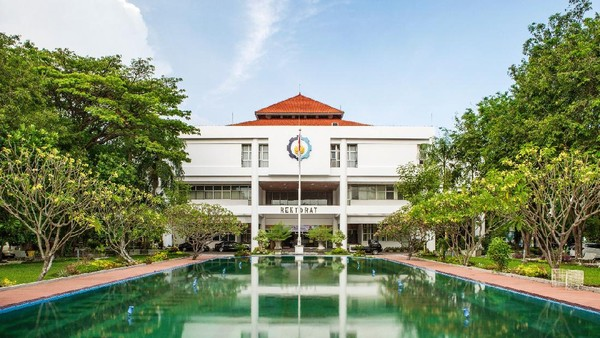

Institut Teknologi Sepuluh Nopember (ITS)
Institut Teknologi Sepuluh Nopember (ITS) adalah perguruan tinggi negeri yang terletak di Surabaya, Jawa Timur. Pada awalnya, ITS didirikan oleh Yayasan Perguruan Tinggi Teknik (YPTT) yang diketuai oleh dr. Angka Nitisastro pada 10 November 1957. Dies Natalis ITS pertama dilaksanakan pada 10 November 1960, sementara nama "ITS" mulai digunakan dalam Peraturan Pemerintah No. 9 tahun 1961 (ditetapkan tanggal 23 Maret 1961). Dalam visi awal, ITS ditujukan untuk mendidik para pemimpin yang unggul di bidang sains dan teknologi, untuk mengangkat Republik Indonesia menjadi negara berperadaban maju dan tinggi. Kampus ITS Sukolilo menempati lahan seluas 180 hektar, dengan luas bangunan seluruhnya kurang lebih 150.000 m². Selain itu terdapat Kampus Manyar yang dipergunakan oleh Program D-3 dan D-4 Teknik Sipil dengan luas bangunan 5.176 m² dan Kampus ITS Cokroaminoto yang dipergunakan untuk magister manajemen serta beberapa lembaga kerja sama dengan luas bangunan 4.000 m²
Sejarah
Pendirian
1957. PII Cabang Jawa Timur mengadakan lustrum pertama dan gagasan mendirikan lembaga pendidikan tinggi kembali dilontarkan. Sebagai hasilnya, dr. Angka Nitisastro, seorang dokter umum, bersama dengan insinyur-insinyur PII cabang Jawa Timur memutuskan untuk mewujudkan berdirinya sebuah Yayasan Perguruan Tinggi Teknik.
Beberapa alasan pokok pendirian yayasan tersebut antara lain:
-Lahan Indonesia yang luas dan memiliki kekayaan hasil alam yang melimpah dan belum dimanfaatkan
-Kebutuhan akan tenaga insinyur sekitar 7000 untuk melaksanakan program-program pembangunan dan industri di dalam negeri.
-Melihat perbandingan dengan jumlah insinyur di negara maju dan berkembang lainnya yang jauh perbedaannya.
17 Agustus 1957
Yayasan Perguruan Tinggi Teknik (YPTT) secara resmi berdiri dan diketuai oleh dr. Angka Nitisastro. Yayasan tersebut dibentuk sebagai wadah untuk memikirkan tindakan-tindakan lebih lanjut dan memperbincangkan sedalam-dalamnya segala konsekuensi yang berkaitan dengan pengambilan keputusan dalam rangka membulatkan tekad mendirikan sebuah Perguruan Tinggi Teknik di kota Surabaya.
10 November 1957
Yayasan mendirikan Perguruan Tinggi Teknik 10 Nopember Surabaya yang diresmikan oleh Presiden Soekarno. Perguruan Tinggi Teknik 10 Nopember Surabaya hanya memiliki dua jurusan yaitu, Jurusan Teknik Sipil dan Jurusan Teknik Mesin.
Setelah beberapa tahun melalui usaha-usaha yang dirintis oleh tokoh-tokoh dari YPTT, Perguruan Tinggi Teknik 10 Nopember diubah statusnya menjadi Perguruan Tinggi Negeri dengan nama: “Institut Teknologi Sepuluh Nopember di Surabaya”. Institut Teknologi Sepuluh Nopember Surabaya yang semula memiliki 2 (dua) jurusan yaitu Teknik Sipil dan Teknik Mesin berubah menjadi lima yaitu: Teknik Sipil, Teknik Elektro, Teknik Mesin, Teknik Perkapalan, dan Teknik Kimia.